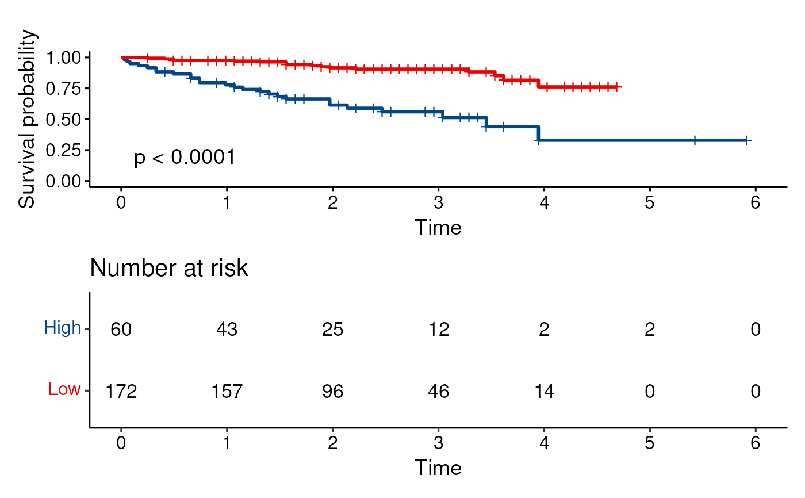

Survival analysis
survivaly_analysis(
Event = NULL,
Time = NULL,
Group = NULL,
group.prefix = NA,
ylab = "Survival probability",
title = "",
palette = "lancet",
conf.int = FALSE,
legend.position = "none",
linetype = 1,
calculate.pval = FALSE,
remove.na = FALSE,
only.consider.group = NULL,
not.consider.group = NULL,
risk.table = TRUE,
best.point = F,
cut.quantile = NULL,
cut.label = NULL,
surv.median.line = "none",
pval = TRUE,
returnSurv.fit = FALSE,
maximum.days = NULL
)Required 0,1
Required
Required
Default ""
Default "Suvival analysis"
the color palette to be used.
logical value. If TRUE, plots confidence interval.
one of c("top", "bottom", "left", "right", "none"). Default is "none".
line types. Allowed values includes i) "strata" for changing linetypes by strata (i.e. groups); ii) a numeric vector (e.g., c(1, 2)) or a character vector c("solid", "dashed").
If TRUE, just reture p value data.frame.
If remove NA samples
Groups to consider
Groups to exclude
Default TRUE. Show the strata Table
If best cut point wanted, pls input values by Group variable
Love this paramter, hansome
character vector for drawing a horizontal/vertical line at median survival. Allowed values include one of c("none", "hv", "h", "v"). v: vertical, h:horizontal.
logical value, a numeric or a string or show "HR" or "PHR" or "HRCI" or "PHRCI"
If TRUE, reture the fit object. Easy to check median survival time
The maximum days or months
data(LIRI)
loonR::survivaly_analysis(LIRI$status, LIRI$time, LIRI$ANLN > mean(LIRI$ANLN), legend.position="right", risk.table = F )
#> ! Use of `vars()` is now deprecated and support will soon be removed. Please replace calls to `vars()` with `c()`.
#>
#> p < 0.0001
#> Loading required package: patchwork
#>
#> Attaching package: 'patchwork'
#> The following object is masked from 'package:cowplot':
#>
#> align_plots
loonR::survivaly_analysis(LIRI$status, LIRI$time, LIRI$ANLN, best.point = T)
#> Best cut point is 4.437316
#> Global cutpoint for is 4.437316
#> ----------------
#> Group count: 60 172
#> ------------------
#> ! Use of `vars()` is now deprecated and support will soon be removed. Please replace calls to `vars()` with `c()`.
#>
#> p < 0.0001
